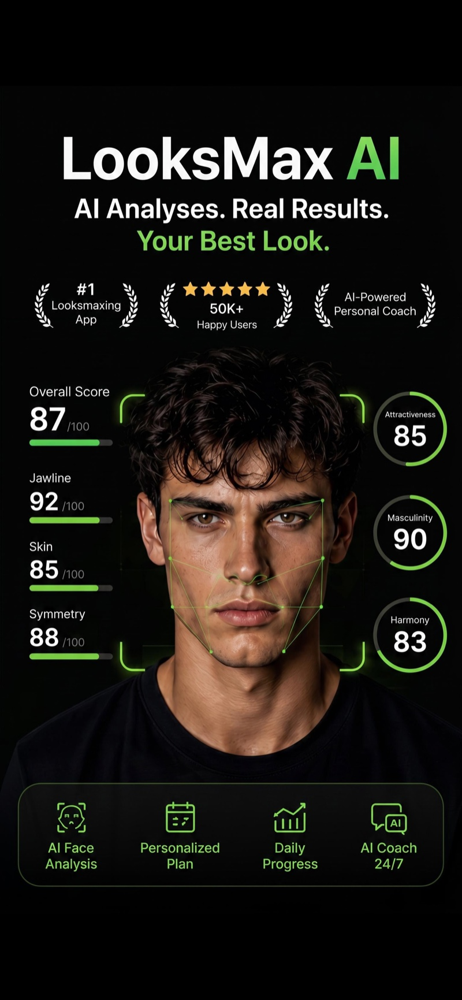
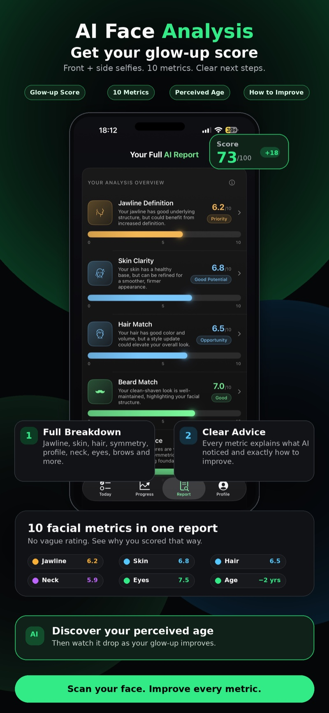
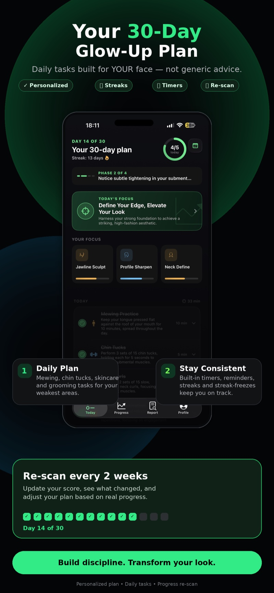
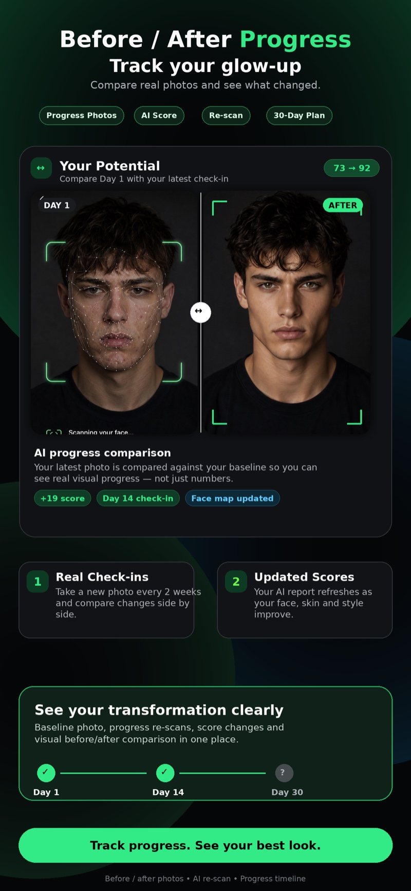
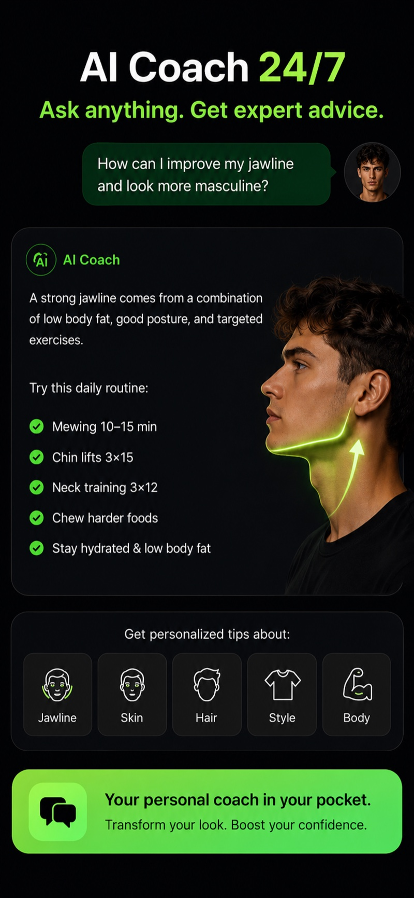
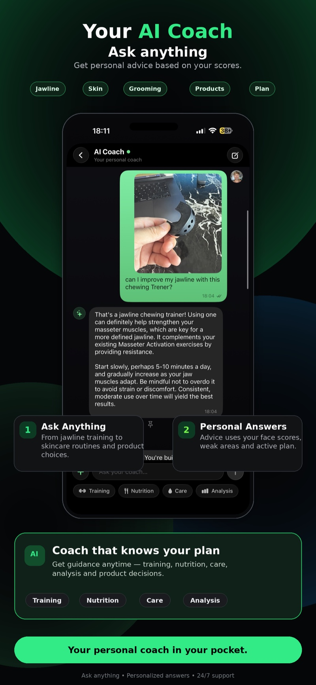

The looksmaxxing app that shows you exactly how to glow up.
Scan your face with AI, get your rating across 10 facial metrics — jawline, skin, hair, symmetry — and follow a personalized 30-day glow-up plan built for your face.
Get Looksmaxxing free on iPhone.
AI face analysis, honest ratings and a daily glow-up plan — in your pocket.
App Store
AI face rating, coaching and progress — see it in action.
From your first scan to your before & after: every screen is built to move your score up.






Swipe to explore →
How the AI face analysis works.
Three steps from "how do I look?" to a plan you can act on today.
Scan your face
Take a front and side selfie. Good lighting, neutral expression — the app guides you the whole way. No account needed.
Get your rating
In seconds, AI scores your face out of 100 across 10 metrics and estimates your perceived age — with every score explained.
Follow your plan
Work your 30-day glow-up plan — mewing, skincare, grooming, posture — then re-scan every two weeks and watch the numbers move.
10 facial metrics. One clear picture.
Looksmaxxing guides.
Straight answers to the questions everyone searches — and how to act on them with the app.
What Is Looksmaxxing? A No-BS Beginner's Guide
What looksmaxxing actually means, softmaxxing vs. hardmaxxing, and how to start the smart way.
Read the guide TechniqueMewing: How to Do It Right — and What It Can't Do
Correct tongue posture step by step, what the evidence says, and how to track it daily.
Read the guide JawlineJawline Exercises That Actually Do Something
Chin tucks, posture, body fat — the honest hierarchy of what sharpens a jawline.
Read the guide AI ratingRate My Face: How AI Face Rating Works
What an AI attractiveness test measures, how scores are built, and what to do with yours.
Read the guide Glow-upHow to Glow Up in 30 Days (For Guys)
A realistic 30-day glow-up checklist: skin, hair, grooming, posture — and how to stay consistent.
Read the guide SymmetryFacial Symmetry Test: How Symmetrical Is Your Face?
Why symmetry matters less than you think, how AI measures it, and what you can improve.
Read the guide Perceived ageHow Old Do I Look? Test Your Perceived Age
What makes a face read older — and the habits that reliably take years off.
Read the guide EyesHunter Eyes & Canthal Tilt, Explained
What positive canthal tilt is, why "hunter eyes" score high, and what's realistic to change.
Read the guide Side profileHow to Improve Your Side Profile
Forward head posture, recessed chin, neck training — fixing the view you never see.
Read the guide SkinA Simple Skincare Routine for Men
Cleanser, moisturizer, SPF — the three-step routine that moves your skin score fastest.
Read the guideLooksmaxxing FAQ.
Looksmaxxing means systematically improving your appearance — jawline, skin, hair, grooming, posture and style. The app gives you an honest AI read on where you stand today, then a concrete daily plan to improve.
Learn more: What is looksmaxxing? →You take a front and side selfie. AI vision analyzes your features and returns a glow-up score out of 100 across 10 metrics — with every score explained, plus your estimated perceived age. Scores are guidance for tracking your own progress, not an absolute judgement.
Learn more: How AI face rating works →Mewing — resting your tongue on the roof of your mouth — is popular and low-risk, but hard evidence for facial change in adults is limited. It supports better oral posture and pairs well with proven habits. The app treats it as one technique among many, never a miracle fix.
Learn more: Mewing, done right →The real levers: lower body fat, better head-and-neck posture, and consistent targeted work like chin tucks. The app scores your jawline, explains what the AI noticed, and schedules daily jawline tasks in your plan.
Learn more: Jawline exercises that work →Attack your weakest areas daily: skincare, grooming, hair, posture and sleep compound fast. The app builds that plan for you from your AI analysis — specific tasks, streaks, reminders and a re-scan every two weeks.
Learn more: The 30-day glow-up →Canthal tilt is the angle between your eye's inner and outer corner; "hunter eyes" is the community term for deep-set eyes with a positive tilt. The app scores your eye area and is honest about which factors you can and can't change.
Learn more: Hunter eyes & canthal tilt →The app estimates your perceived age from your selfie — the age strangers would guess. Improve your skin, hair and grooming through the plan and watch that number drop at every re-scan.
Learn more: Perceived age →The app measures symmetry from your front selfie as one of its 10 metrics. Small asymmetries are completely normal — almost nobody is perfectly symmetrical, and other people barely notice.
Learn more: Facial symmetry →Yes — free to download on iPhone, no account or sign-up required. An optional premium subscription unlocks the full analysis and advanced features; cancel anytime in your Apple account settings.
Get it free on the App Store →Your photos are processed securely by AI to generate your analysis and are never sold or published. There's no account and no public profile — and you can erase your data anytime from inside the app.
Learn more: Privacy Policy →No. Looksmaxxing is for education and self-improvement only. It is not medical, dermatological or cosmetic advice. Always consult a qualified professional before making health decisions.
Ready to see your real score?
Scan your face, get your AI rating, and start your personalized 30-day glow-up today.